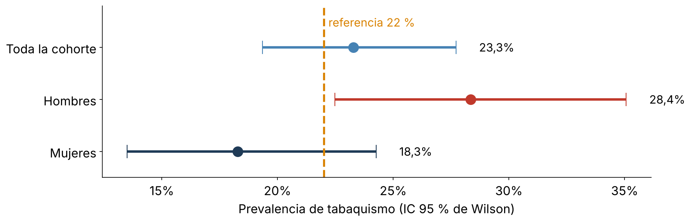
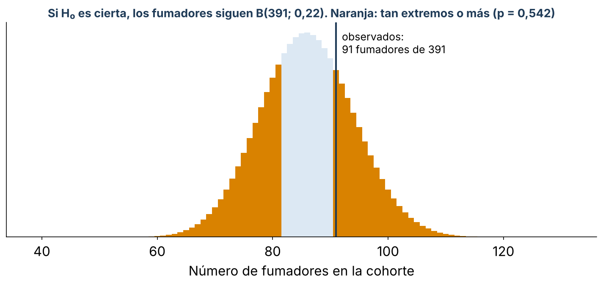
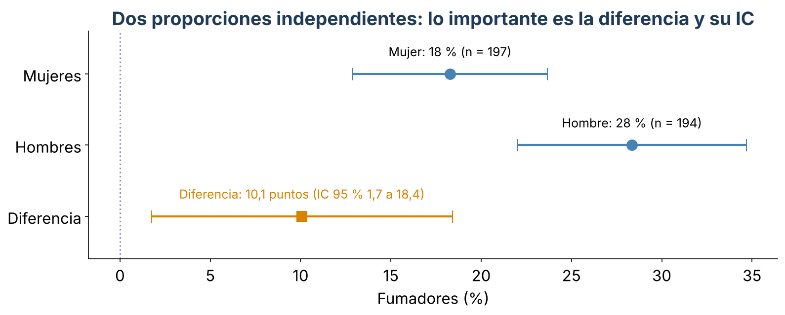
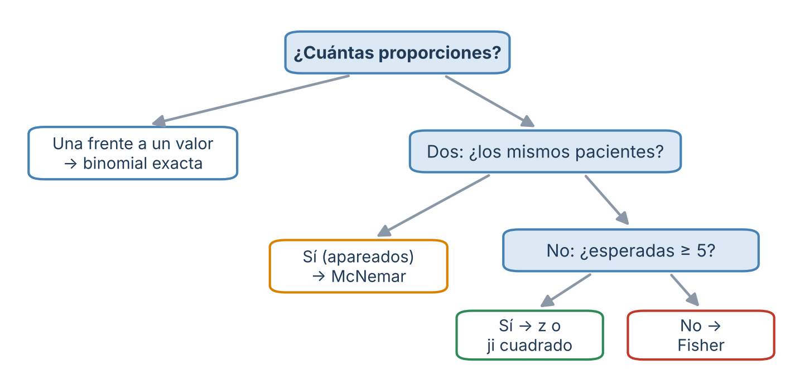
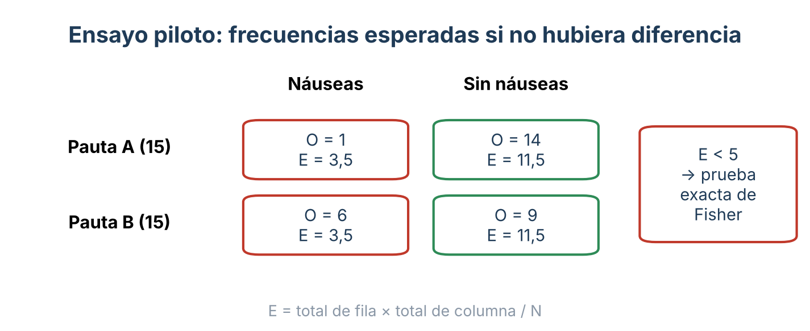

Bioestadística (1964) · Grado en Medicina · Curso 2027-2028
Tema 220Inferencia sobre proporciones en una y dos poblaciones
Módulo 5. Generalización de conclusiones
Evaluación: el examen del Módulo 5 se hace con Colab. Practica ejecutando e interpretando cada análisis.
Fernando Borrás Rocher · Universidad Miguel Hernández de Elche · CC BY 4.0
Objetivos de aprendizaje
Al terminar esta sesión serás capaz de:
- Contrastar si una proporción observada es compatible con un valor de referencia, con la prueba binomial exacta.
- Comparar dos proporciones independientes con la prueba z y estimar el intervalo de confianza de su diferencia.
- Elegir la prueba exacta de Fisher cuando las frecuencias son pequeñas.
- Calcular el tamaño muestral necesario para comparar dos proporciones.
- Comunicar la comparación con la diferencia, su intervalo de confianza y el valor p.
Cómo usar esta presentación
Usa el selector de arriba para dar el tema en una sesión completa o en dos sesiones intercaladas.
🎓 Sesión de clase magistral
- 1. Caso clínico de partida 5 min
- 2. Conceptos clave 10 min
- 5. Autoevaluación 5 min
Explica los conceptos, haz la pausa activa y cierra con las ideas clave.
💻 Sesión de Colab
- 3. Demostración: proporciones en la cohorte cardiovascular 20 min
- 4. Práctica en la app Bioestadística 10 min
- 5. Autoevaluación 5 min
Cada estudiante abre su copia del cuaderno, predice el resultado y después ejecuta la celda.
Teclas: ← → para pasar · N notas del profesor · M cambiar de modo · F pantalla completa · Esc índice.
1. Caso clínico de partida
Tabaquismo en la cohorte: ¿distinto del 22 %? ¿distinto entre sexos?

- Una proporción frente a un valor de referencia: prueba binomial.
- Dos proporciones de grupos distintos: diferencia con su IC y prueba z (o ji cuadrado).
2. Conceptos clave
2.1 Una proporción frente a un valor de referencia

- $H_0$: p = $p_0$ (la proporción de la población es la de referencia).
- $H_1$: p ≠ $p_0$.
Si $H_0$ es cierta, el número de casos en n pacientes sigue una distribución binomial B(n, $p_0$) (Tema 170). La prueba binomial exacta calcula el valor p directamente con esa distribución. Con n grande se puede usar la aproximación normal:
$$z = \frac{\hat{p} - p_0}{\sqrt{p_0(1-p_0)/n}}$$
2. Conceptos clave
2.2 Dos proporciones independientes

- $H_0$: $p_1 = p_2$.
- Estimación del efecto: la diferencia de proporciones $\hat{p}_1 - \hat{p}_2$, con su IC 95 %.
La prueba z de dos proporciones compara la diferencia observada con su error estándar bajo $H_0$, calculado con la proporción conjunta $\hat{p}$ de ambos grupos:
$$z = \frac{\hat{p}_1 - \hat{p}_2}{\sqrt{\hat{p}(1-\hat{p})\left(\frac{1}{n_1}+\frac{1}{n_2}\right)}}$$
Esta prueba es equivalente a la ji cuadrado de una tabla 2 × 2 (Tema 230): $z^2 = \chi^2$.
2. Conceptos clave
2.3 Qué prueba usar
Qué prueba usar con proporciones

- La pregunta clave: ¿son los mismos pacientes (apareados) o grupos distintos?
- Con frecuencias esperadas pequeñas, Fisher.
Pausa activa
Piensa 30 segundos, comenta con quien tienes al lado y vota.
Quieres saber si la prevalencia de obesidad en tu centro (52 de 200) es distinta del 22 % nacional. ¿Qué prueba usas?
En la sesión de Colab
Lo que acabas de ver se comprueba con datos en el cuaderno del Tema 220.
- Abre el cuaderno y guarda tu copia: Archivo → Guardar una copia en Drive.
- Ejecuta la celda de configuración.
- Ve a la demostración y predice cada resultado antes de ejecutar.
3. Demostración: proporciones en la cohorte cardiovascular
3.1 Los datos
▶ En tu cuaderno: 3.1 Los datos. Antes de ejecutar, escribe qué esperas obtener.
import numpy as np
import pandas as pd
from scipy import stats
cohorte = pd.read_csv("https://raw.githubusercontent.com/fborrasumh/bioestadistica/main/datos/cohorte_limpia.csv")
tabaco = cohorte.dropna(subset=["fumador"])
fumadores, n = (tabaco["fumador"] == "Sí").sum(), len(tabaco)
print(f"Pacientes con dato de tabaquismo: {n} (faltan {len(cohorte) - n})")
print(f"Fumadores: {fumadores} ({fumadores / n:.1%})")3. Demostración: proporciones en la cohorte cardiovascular
3.2 Una proporción: ¿es distinta del 22 %?
▶ En tu cuaderno: 3.2 Una proporción: ¿es distinta del 22 %?. Antes de ejecutar, escribe qué esperas obtener.
from statsmodels.stats.proportion import proportion_confint
prueba = stats.binomtest(fumadores, n, p=0.22)
li, ls = proportion_confint(fumadores, n, method="wilson")
print(f"Prevalencia: {fumadores / n:.1%} (IC 95 %: {li:.1%} a {ls:.1%})")
print(f"Prueba binomial exacta frente al 22 %: p = {prueba.pvalue:.3f}")Interpretación: la prevalencia de tabaquismo en la cohorte es compatible con la de referencia; el IC 95 % incluye el 22 %. Con estos datos no hay evidencia de que nuestra población fume más ni menos que la de referencia. Tampoco se ha demostrado que fume igual: el intervalo admite diferencias de algunos puntos en ambos sentidos.
3. Demostración: proporciones en la cohorte cardiovascular
3.3 Dos proporciones: hombres y mujeres
▶ En tu cuaderno: 3.3 Dos proporciones: hombres y mujeres. Antes de ejecutar, escribe qué esperas obtener.
tabla = pd.crosstab(tabaco["sexo"], tabaco["fumador"])
print(tabla, "\n")
casos = tabla["Sí"].loc[["Hombre", "Mujer"]].to_numpy()
totales = tabla.sum(axis=1).loc[["Hombre", "Mujer"]].to_numpy()
p_h, p_m = casos / totales
print(f"Hombres: {casos[0]}/{totales[0]} = {p_h:.1%}")
print(f"Mujeres: {casos[1]}/{totales[1]} = {p_m:.1%}")
print(f"Diferencia: {p_h - p_m:.1%}")from statsmodels.stats.proportion import proportions_ztest, confint_proportions_2indep
z, p_valor = proportions_ztest(casos, totales)
li, ls = confint_proportions_2indep(casos[0], totales[0], casos[1], totales[1], method="newcomb")
print(f"Prueba z de dos proporciones: z = {z:.2f}, p = {p_valor:.3f}")
print(f"Diferencia: {p_h - p_m:.1%} (IC 95 %: {li:.1%} a {ls:.1%})")
chi2, p_chi, _, _ = stats.chi2_contingency(tabla, correction=False)
print(f"Ji cuadrado sin corrección: χ² = {chi2:.2f} (= z² = {z ** 2:.2f}), p = {p_chi:.3f}")Cómo se comunica: «La prevalencia de tabaquismo fue del 28,4 % en hombres y del 18,3 % en mujeres (diferencia: 10,1 puntos; IC 95 %: 1,7 a 18,3; p = 0,018)».
El IC dice que la diferencia real podría ser pequeña (2 puntos) o considerable (18 puntos). Para la campaña, el resultado sugiere priorizar a los hombres, pero la magnitud del exceso está poco determinada.
3. Demostración: proporciones en la cohorte cardiovascular
3.4 Frecuencias pequeñas: la prueba exacta de Fisher
▶ En tu cuaderno: 3.4 Frecuencias pequeñas: la prueba exacta de Fisher. Antes de ejecutar, escribe qué esperas obtener.

En un ensayo piloto con 15 pacientes por grupo, presentan náuseas 1 con la pauta A y 6 con la pauta B.
piloto = np.array([[1, 14],
[6, 9]])
esperadas = stats.contingency.expected_freq(piloto)
print("Frecuencias esperadas bajo H₀:")
print(esperadas.round(1), "\n")
_, p_fisher = stats.fisher_exact(piloto)
_, p_chi, _, _ = stats.chi2_contingency(piloto, correction=False)
print(f"Exacta de Fisher: p = {p_fisher:.3f}")
print(f"Ji cuadrado (no fiable aquí): p = {p_chi:.3f}")Hay casillas con frecuencias esperadas menores de 5. Por eso, la aproximación de la ji cuadrado no es fiable: daría un valor p más pequeño del que corresponde. La prueba de Fisher calcula la probabilidad exacta y es la que se debe usar.
3. Demostración: proporciones en la cohorte cardiovascular
3.5 Dos modelos de IA con preguntas distintas
▶ En tu cuaderno: 3.5 Dos modelos de IA con preguntas distintas. Antes de ejecutar, escribe qué esperas obtener.
El modelo A acierta 41 de 50 preguntas de Cardiología; el modelo B, evaluado con otras 50 preguntas, acierta 33. ¿Es A mejor?
aciertos, preguntas = np.array([41, 33]), np.array([50, 50])
z, p_valor = proportions_ztest(aciertos, preguntas)
li, ls = confint_proportions_2indep(41, 50, 33, 50, method="newcomb")
print(f"Exactitud: A {41 / 50:.0%} · B {33 / 50:.0%}")
print(f"Diferencia: {41 / 50 - 33 / 50:.0%} (IC 95 %: {li:.1%} a {ls:.1%}) · p = {p_valor:.3f}")Una diferencia de 16 puntos en exactitud no alcanza la significación con 50 preguntas por modelo. El IC va desde una diferencia ligeramente negativa hasta más de 30 puntos. Además, con preguntas distintas la diferencia puede deberse a que un conjunto era más fácil. El diseño correcto es evaluar los dos modelos con las mismas preguntas y analizarlo como datos apareados (Tema 240).
3. Demostración: proporciones en la cohorte cardiovascular
3.6 ¿Cuántos pacientes hacen falta para comparar dos proporciones?
▶ En tu cuaderno: 3.6 ¿Cuántos pacientes hacen falta para comparar dos proporciones?. Antes de ejecutar, escribe qué esperas obtener.
from statsmodels.stats.power import NormalIndPower
from statsmodels.stats.proportion import proportion_effectsize
potencia = NormalIndPower()
for p1, p2 in [(0.28, 0.18), (0.30, 0.20), (0.20, 0.15)]:
h = proportion_effectsize(p1, p2)
n = potencia.solve_power(effect_size=h, alpha=0.05, power=0.80)
print(f"{p1:.0%} frente a {p2:.0%}: {np.ceil(n):.0f} pacientes por grupo (potencia 80 %)")Detectar diferencias pequeñas entre proporciones exige muestras grandes: pasar de un 20 % a un 15 % requiere unos 900 pacientes por grupo.
Ampliación
Ampliación: la prueba de una proporción por simulación
El valor p de la prueba binomial se puede obtener por simulación (Tema 190). Simula muchas cohortes con una prevalencia real del 22 % exacto.
rng = np.random.default_rng(seed=220)
n_tabaco = len(tabaco)
simulados = rng.binomial(n_tabaco, 0.22, size=100_000)
esperado = n_tabaco * 0.22
p_sim = (np.abs(simulados - esperado) >= abs(fumadores - esperado)).mean()
print(f"Fumadores esperados bajo H₀: {esperado:.0f} · observados: {fumadores}")
print(f"Valor p por simulación: {p_sim:.3f} · prueba exacta: {prueba.pvalue:.3f}")Ampliación
Ampliación: errores frecuentes
Usar la ji cuadrado con frecuencias esperadas pequeñas. Usa Fisher.
Comparar proporciones de los mismos pacientes como si fueran independientes. Usa McNemar.
Dar solo el valor p. Da las dos proporciones, su diferencia y el IC.
Ignorar los valores perdidos. Indica cuántos pacientes entran en el análisis y por qué faltan los demás.
Concluir que dos proporciones son iguales porque p > 0,05.
4. Práctica en la app Bioestadística
Abre la unidad 220 de la app Bioestadística y completa sus misiones:
- Misión básica (sin asistente): elegir la prueba adecuada para seis situaciones clínicas con proporciones.
- Misión clínica (con pistas): comparar la prevalencia de diabetes entre el centro rural y los urbanos. Dar la diferencia, su IC 95 % y el valor p.
- Misión reto (con asistente): pedir al asistente el código para comparar la incidencia de eventos cardiovasculares entre fumadores y no fumadores. Comprobar que elige bien la prueba y redactar el resultado como en un artículo.
Al terminar, exporta el informe de la unidad.
5. Autoevaluación
Responde sin asistente.
5. Autoevaluación
Elige una opción: verás la explicación.
Quieres saber si la prevalencia de obesidad en tu centro (52 de 200) es distinta del 22 % nacional. ¿Qué prueba usas?
La diferencia de dos proporciones es 8 puntos (IC 95 %: −2 a 18). ¿Qué puedes decir?
En una tabla 2 × 2, una casilla tiene una frecuencia esperada de 2,1. ¿Qué prueba usas?
Dos modelos de IA se evalúan con las mismas 100 preguntas. ¿Cómo comparas su exactitud?
¿Qué relación hay entre la prueba z de dos proporciones y la ji cuadrado de la tabla 2 × 2 (sin corrección)?
Ideas clave
- Una proporción frente a un valor de referencia: prueba binomial exacta e IC de Wilson.
- Dos proporciones independientes: diferencia con su IC y prueba z (equivalente a la ji cuadrado).
- Con frecuencias esperadas pequeñas, prueba exacta de Fisher.
- Con los mismos pacientes medidos dos veces, McNemar.
- Comparar proporciones parecidas exige muestras muy grandes.
Glosario
| Término | Definición |
|---|---|
| Prueba binomial exacta | Contraste de una proporción frente a un valor de referencia, con la distribución binomial |
| Proporción conjunta | Proporción de casos de los dos grupos juntos, usada en la prueba z bajo $H_0$ |
| Prueba z de dos proporciones | Contraste de la igualdad de dos proporciones independientes |
| Diferencia de proporciones | $\hat{p}_1 - \hat{p}_2$; también llamada diferencia de riesgos |
| Frecuencia esperada | Número de casos que habría en una casilla si $H_0$ fuera cierta |
| Prueba exacta de Fisher | Contraste de una tabla 2 × 2 que calcula probabilidades exactas, adecuado con frecuencias pequeñas |
| Método de Newcombe | Método recomendado para el IC de la diferencia de dos proporciones |
Para saber más
- Newcombe RG. Interval estimation for the difference between independent proportions: comparison of eleven methods. Stat Med. 1998;17(8):873-890. doi:10.1002/(SICI)1097-0258(19980430)17:8<873::AID-SIM779>3.0.CO;2-I
- Altman DG. Practical Statistics for Medical Research. Londres: Chapman & Hall; 1991. Capítulo 10. doi:10.1201/9780429258589